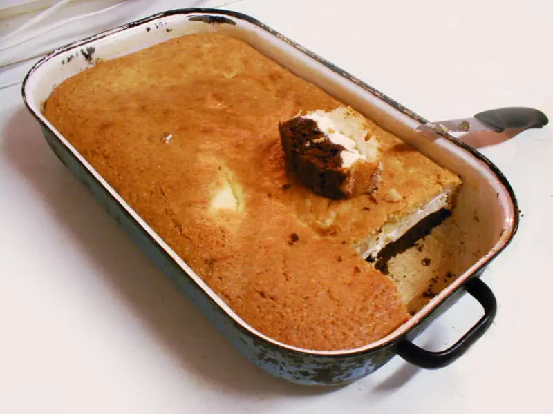

Творожная запеканка без сахара для малышей
Запеканка из творога с бананом вместо сахара для детей от года
50 мин4 порц.237 ккал на порциюБ 22 · Ж 10 · У 14Русская кухня
Открыть в приложении: порции, таймеры, список покупок
Продукты на 4 порц.
- Творог 5%400 г
- Яйцо куриное2 шт
- Бананы1 шт
- Манная крупа2 ст. л.
- Сливочное масло10 г
Как готовить
- Разомните творог вилкой или пробейте блендером, чтобы не было крупинок.
- Добавьте яйца, банан кусочками и манку. Взбейте блендером до гладкой массы и оставьте на 15 минут, чтобы манка набухла.
- Смажьте форму сливочным маслом и выложите массу слоем 3-4 см.
- Выпекайте в духовке при 180 °C (средний жар) 30-35 минут до золотистого верха.
- Дайте запеканке остыть в форме 10 минут, затем нарежьте. В центре она должна быть плотной, а не жидкой.
Совет. Чем спелее банан, тем слаще запеканка. Храните в холодильнике под крышкой до 2 дней, перед подачей слегка подогрейте.